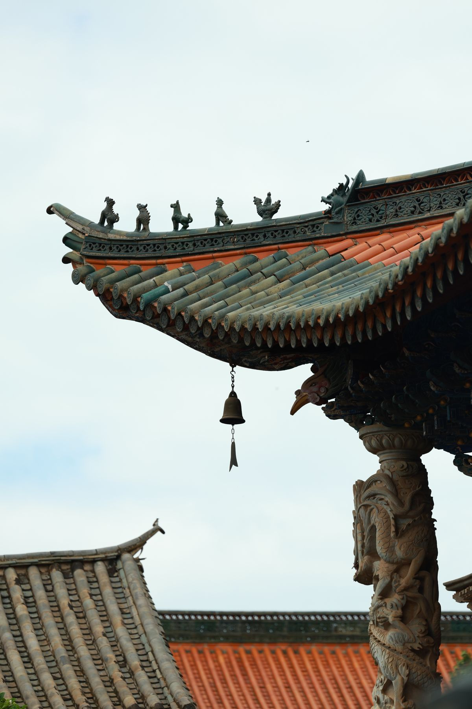
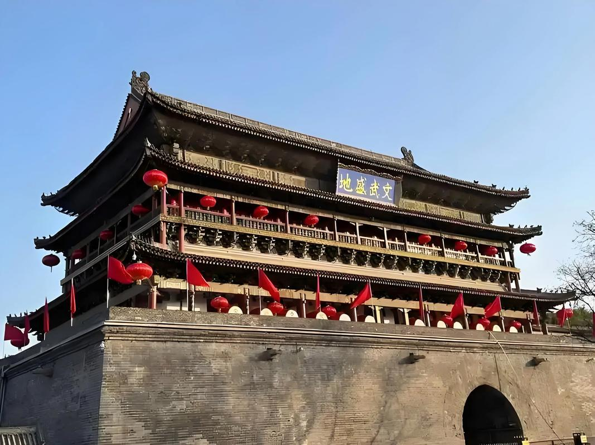
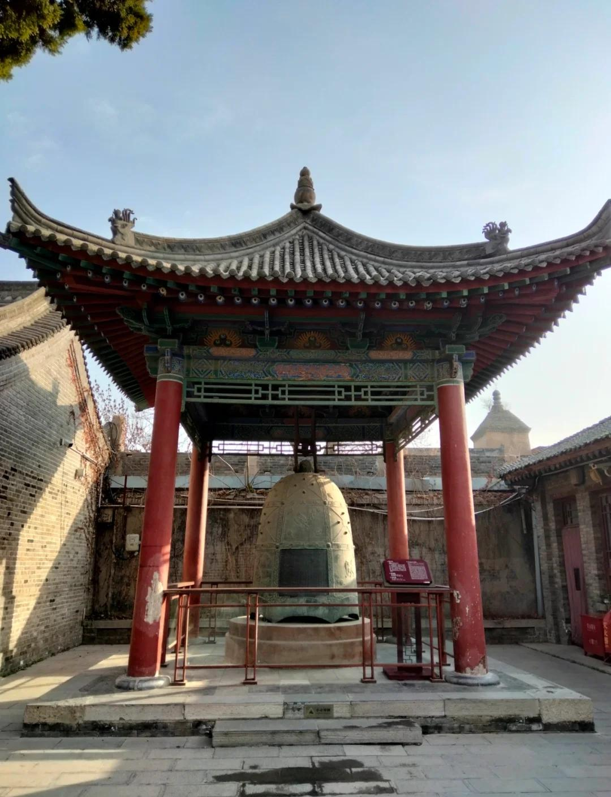
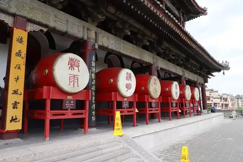

西安钟楼始建于明洪武十七年（1384年），原址位于今西大街以北的广济街口，后因城市格局变迁，于万历十年（1582年）整体迁建于现址——西安城中心东西南北四条大街的交汇处。这一迁移工程极为浩大，相传工匠们采用"堆土法"，在沿途堆起土坡，将钟楼整体沿坡滑移至新址，展现了明代高超的建筑施工技术。
钟楼通高36米，为重檐三滴水攒尖顶式建筑，平面呈正方形，每面各三间。楼体以砖木结构为主，楼基为青砖砌筑，边长35.5米，高8.6米，四面正中各有高宽均为6米的券形门洞，与东西南北四条大街贯通。
钟楼内原悬挂一口唐代"景云钟"，铸于唐景云二年（711年），钟身铸有唐睿宗李旦撰写的铭文，是中国现存最古老的青铜钟之一。每逢清晨，钟声悠扬，"晨钟暮鼓"的传统由此而来。如今景云钟移藏于碑林博物院，钟楼上悬挂的是仿制品，但每逢重大节庆，钟声依然响彻古城。
西安鼓楼建于明洪武十三年（1380年），比钟楼早四年。鼓楼位于西大街北侧，与钟楼相距约250米，两楼遥相呼应。鼓楼通高34米，为歇山顶式建筑，楼内曾悬挂一面大鼓，傍晚击鼓报时，与清晨的钟声共同构成了古代长安城的时间秩序。"晨钟暮鼓"不仅是报时方式，更成为中华文化中秩序与时间的象征。
鼓楼北侧至今保留着"北院门"回民街区，明清时期这里曾是官府聚集之地，如今成为西安最具烟火气的美食文化街区。
如今鼓楼上陈列着二十四面大鼓，分别对应中国传统的二十四节气——立春、雨水、惊蛰……直至大寒。每面鼓上书写节气名称，鼓面绘有相应的节气图案，将中国农耕文明的智慧与建筑艺术融为一体。每日定时有鼓乐表演，游客可以亲耳聆听这传承六百年的鼓声。
"百年鼎鼎世共悲，晨钟暮鼓无休时。" —— 陆游《短歌行》



| 地址 | 西安市碑林区东西南北四条大街交汇处（钟楼）；西大街北侧（鼓楼） |
|---|---|
| 开放时间 | 08:30 — 21:30（旺季）；08:30 — 18:00（淡季） |
| 门票 | 钟楼 30 元 / 鼓楼 30 元 / 钟鼓楼联票 50 元 |
| 交通 | 地铁 2 号线钟楼站，多条公交线路可达 |
| 小贴士 | 推荐傍晚登楼，可同时欣赏白日城景与夜景灯光；钟楼地铁站地下通道可直接通往钟楼入口 |